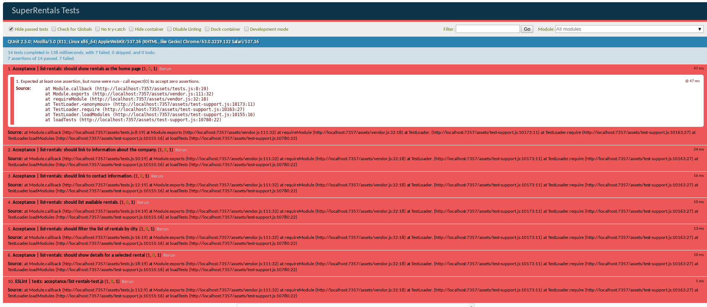

プランニング 編集
Emberアプリケーションの基本的な仕組みを説明するために、Super Rentalsという不動産賃貸サイトのアプリを作っていきます。 トップページ、About、お問い合わせの各ページから始めていきましょう。
始める前に、どんなアプリを作るか見てみましょう。

どんなサイトにしたいか、アプリケーションの要件をリストアップします。
- トップページに物件を表示する
- 会社情報のリンクを置く
- お問い合わせ先のリンクを置く
- 利用可能な物件の一覧を載せる
- 市で物件を絞れるようにする
- 選択された物件の詳細情報を表示する
このページの残りは、Emberでアプリの実装をする度に受け入れテストを追加していくやり方を紹介します。この先の各ページの最後の部分は、実装した機能のテストの追加に割かれています。アプリケーションの動作にテストは不要ですので、テストを書かずに先に進むこともできます。
ですので、後述のEmberでのテストにさらに読むか、ここで次のページに行っても構いません。
テストも書く
上記の要件は、Emberの受け入れテストで表すことができます。 受け入れテストでは、実際の人がやるようにアプリを操作しますが、自動化されており、アプリが壊れていないことを明確にするのを助けます。
Ember CLIを使ってEmberのプロジェクトを作成すると、JavaScriptテストフレームワークのQUnitがテストの定義と実行に使われます。
受け入れテストの作成からやってみましょう。
1 |
ember g acceptance-test list-rentals |
コマンドを実行すると、以下ように出力されるはずです。
tests/acceptance/list-rentals-test.js という1つのファイルが作成されのを表示しています。
1 2 |
installing acceptance-test create tests/acceptance/list-rentals-test.js |
作成されたファイルを開くと、list-rentalsルートにアクセスし、そのルートが読み込まれていることを検証してるコードがあるのがわかります。
そのコードは、初めて受け入れテストを書く私たちを助けるためにあります。
まだアプリケーションには何も機能を追加していませんし、これからアプリのテストをしてくために、このテストを取り入れましょう。
そのために、生成されたコードの/list-rentalsを/に置き換えてください。
以下のテストは、http://localhost:4200/でアプリにアクセスし、ページの読み込みが完了し、意図したURLにいるかどうか確認しています。
| /tests/acceptance/list-rentals-test.js | |
1 2 3 4 5 6 7 8 9 10 11 12 13 14 15 |
import { test } from 'qunit'; import moduleForAcceptance from 'super-rentals/tests/helpers/module-for-acceptance'; moduleForAcceptance('Acceptance | list-rentals'); test('visiting /list-rentals', function(assert) { test('visiting /', function(assert) { visit('/list-rentals'); visit('/'); andThen(function() { assert.equal(currentURL(), '/list-rentals'); assert.equal(currentURL(), '/'); }); }); |
このシンプルなテストで注意すべきことは、
- 受け入れテストは
moduleForAcceptance関数を呼んでセットアップされる。この関数はEmberアプリケーションが書くテストの合間に起動と終了することを確実にする。 - QUnitは各テスト関数に
assertというオブジェクトを渡す。assertはequal()などの関数を持ち、テスト内で状態を調べることができる。 - Emberの受け入れテストでは
visit、andThen、currentURLといったテストヘルパーを使う。テストヘルパーの詳細はチュートリアル内に後述する。
では、テストをCLIで実行しましょう。ember test --server
デフォルトで、ember test --serverを実行すると、Ember Testemテストランナーを実行し、ChromeがQUnitを実行します。
起動されたChromeは10件テストがパスしたのを表示しています。 "Hide passed tests"というラベルにチェックを外すと、受け入れテストが1件、ESLintが9件パスしたのが表示されます。EmberはESLintで、構文の確認(lint)を実行します。

アプリケーションの要件を受け入れテストとして追加する
前述した通り、テストで全部きちんと動いているか確実にすることができました。 それでは、上記のアプリの要件に合わせたテストに置き換えましょう。
| /tests/acceptance/list-rentals-test.js | |
1 2 3 4 5 6 7 8 9 10 11 12 13 14 15 16 17 18 19 20 21 22 23 24 25 26 27 28 29 |
import { test } from 'qunit'; import moduleForAcceptance from 'super-rentals/tests/helpers/module-for-acceptance'; moduleForAcceptance('Acceptance | list-rentals'); test('should show rentals as the home page', function (assert) { }); test('should link to information about the company.', function (assert) { }); test('should link to contact information.', function (assert) { }); test('should list available rentals.', function (assert) { }); test('should filter the list of rentals by city.', function (assert) { }); test('should show details for a selected rental', function (assert) { }); test('visiting /', function(assert) { visit('/'); andThen(function() { assert.equal(currentURL(), '/'); }); }); |
ember test --serverを実行すると7件の失敗が表示されるはずです。6件は、先ほど置き換えたテストで、1件はassertは定義されているが一度も使われていないというESLintの報告です。上記のテストが失敗するのはQUnitが少なくとも1つのassertを要求するからです。
このチュートリアルを続けていく中で、これらの受け入れテストをチェック項目として使います。 全てのテストがパスしていれば、高い目標を達成したことになります。
